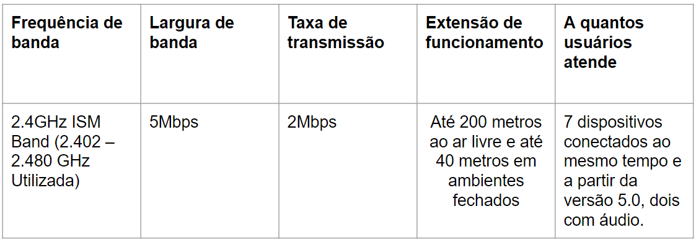

O que é o Bluetooth?
OBluetooth é um padrão global de comunicação sem fio e de baixo consumo de energia que permite a transmissão de dados entre dispositivos, desde que um esteja próximo do outro. Uma combinação de hardware e software é utilizada para permitir que esse procedimento ocorra entre os mais variados tipos de aparelhos.
A transmissão de dados é feita por meio de radiofrequência, permitindo que um dispositivo detecte o outro independente de suas posições, sendo necessário apenas que ambos estejam dentro do limite de proximidade (via de regra, quanto mais perto um do outro, melhor).
Funcionamento
Os dados são transmitidos através de ondas de radio, o bluetooth utiliza uma frequência de onda de radio curta (2.4 GHz) para criar uma conexão entre aparelhos habilitados, o que faz com que sua transmissão seja feita localmente. O bluetooth possui uma espécie de rede local diferente chamada de Piconet, onde é permitida a conexão com até 8 dispositivos diferentes onde um dispositivo é o mestre que controla os demais dispositivos conectados a ele, e os dispositivos escravos que obedecem o comando de ações seu mestre.
Para que não ocorra interferência quando múltiplos dispositivos estão conectados o bluetooth utiliza o salto de Frequência, onde os dispositivos possuem 79 tipos de frequências diferentes e elas são trocadas em até 1600 vezes por segundo, evitando assim o conflito de informações. O bluetooth utiliza o Half-Duplex e Full-Duplex como modo de transmissão de dados entre os dispositivos.
Como seu alcance é curto e só permite a comunicação entre dispositivos próximos e uma de suas vantagens é que seu consumo de energia é bem baixo.
Para que seja possível atender aos mais variados tipos de dispositivos, o alcance máximo do Bluetooth foi dividido em três classes:
Classe 1: potência máxima de 100 mW (miliwatt), alcance de até 100 metros;
Classe 2: potência máxima de 2,5 mW, alcance de até 10 metros;
Classe 3: potência máxima de 1 mW, alcance de até 1 metro.
A Classe 2 é a mais usada, logo, a maioria dos dispositivos trabalha com alcance de até 10 metros.
Vantagens
Transmissão de dados sem fio
Por ter um baixo consumo de energia, funciona bem em dispositivos a bateria
Por ser uma tecnologia barata, pode ser empregada em dispositivos de baixo custo
Gerência transmissões de voz e dados simultaneamente
Desvantagens
Curto alcance
Com rede cabeada pode-se conseguir uma banda muito maior
Protocolos de emparelhamento incompatíveis entre dispositivo
História
O nome Bluetooth tem origem no Rei Dinamarquês Harald Blatand, principal responsável pela união dos povos então inimigos da região onde hoje se situam Noruega, Suécia e Dinamarca. A tradução do nome Blatand para o inglês é Bluetooth. Como o propósito da tecnologia é promover a colaboração entre diferentes setores industriais, tais como computação, telefonia móvel e mercado automotivo, similar aos feitos do monarca, seu nome pareceu apropriado para a nova tecnologia.
A história do Bluetooth começa por volta do ano de 1994, quando a empresa Ericsson, em busca de um diferencial, procurou investir no desenvolvimento de uma forma de comunicação entre aparelhos celulares e seus respectivos acessórios. Ela deveria utilizar sinais de rádio que não fossem caros, ultrapassando a idéia da rede por cabos. Esse estudo resultou na criação de um sistema de rádio de curto alcance chamado de MClink, que utilizava uma baixa potência, e, portanto, não consumia tanta energia.
Com a possibilidade de uma implementação de um sistema relativamente fácil e barato, a Ericcson percebeu que a idéia do MClink poderia realmente dar certo, ampliando seus investimentos.
No ano de 1997, o promissor projeto atraiu a atenção de outras empresas, que poderiam também usufruir desse mecanismo de comunicação em redes. Por esse motivo, em 1998, houve a criação do Bluetooth SIG (Special Interest Group). As empresas que participaram da sua criação eram consideradas gigantes nas suas áreas (desenvolvimento de chips e unidades de processamento, telecomunicações e produção de computadores), dando uma dimensão de valor a tecnologia que estava sendo aperfeiçoada. São elas: Intel, Ericcson, IBM, Toshiba e Nokia. Com tantos setores diferentes influenciando o processo de aperfeiçoamento da tecnologia, permitiu-se a interoperabilidade e o uso dela nos mais variados tipos de aparelhos, não se restringindo somente aos telefones celulares.
O Bluetooth Special Interest Group se traduziu numa organização privada e sem fins lucrativos. Ela não fabrica e nem vende produtos com a tecnologia Bluetooth, apenas trabalha continuamente no desenvolvimento da tecnologia de redes sem a utilização de fios para implementação desta nos produtos fabricados pelos membros do grupo.
Principais aplicações
O Bluetooth é uma tecnologia de comunicação sem fio barata, de curto alcance e com baixa taxa de transferência, portanto é ideal para comunicações com baixo volume de dados, por exemplo:
Controle sem fio e comunicação entre celulares e fones de ouvido sem fio ou sistemas viva voz para carros. Essa foi uma das mais antigas aplicações da tecnologia a se tornar popular;
Comunicação sem fio entre PCs e dispositivos de entrada e saída, como mouse, teclados e impressoras;
Consoles de videogames da nova geração – Wii U, PlayStation 3 e 4, Xbox One S e Xbox One X usam Bluetooth para seus respectivos controles sem fio;
Substituição de dispositivos seriais tradicionais com fio em equipamentos de teste, receptores GPS, equipamentos médicos, leitores de código de barras e dispositivos de controle de tráfego;
Padrão IEEE
Em 1998 foi formado o grupo SIG(Special Interest Group) que era formado por empresas que tinham interesse na tecnologia Bluetooth. Já em 1999, foi lançada a primeira definição do protocolo Bluetooth IEEE 802.15.1. O objetivo da tecnologia era ser de baixo custo e ideal para transmissões sem fio a curtas distâncias. E após o lançamento das normas IEEE as empresas começaram a lançar os seus produtos com o Bluetooth presente.
Topologias
O Bluetooth suporta conexões ponto a ponto e multiponto. Assim, as redes podem ser organizadas em dois tipos Piconet e Scattnet. As redes Piconet possuem um nó funcionando como mestre e até sete nós funcionando como escravos, já na Scattnet é possível ter várias Piconets conectadas entre si, onde é possível um nó ser escravo em mais de um Piconet ou ser escravo em uma Piconet e mestre na outra.
Estados e operação
Quando um dispositivo IEEE 802.15.1 Bluetooth é ligado, ele tenta operar como um escravo de um dispositivo mestre que já esteja ligado. O dispositivo por padrão entra em estado de stand by, sendo que pode mudar para os seguintes estados: inquiry, inquiry scan, page scan e page. Assim, o dispositivo vai transitando entre estes diferentes estados até estabelecer uma conexão com o mestre.
Profiles
O grupo SIG(Special Interest Group) do Bluetooth é dividido em áreas de pesquisa técnica. Dentro dessas áreas técnicas são dispostos profiles. Cada profile define uma seleção de mensagens e procedimentos que são especificados no Bluetooth como funcionalidades. Assim, são definidos quatro profiles de uso frequente GAP, SDAP, SPP e GOEP.
O GAP (Generic Access Profile) define os procedimentos genéricos - trata da descoberta e gerenciamento de conexão em dispositivos e níveis de segurança.
SDAP (Service Discovery Application Profile) - define os procedimentos para uma aplicação de um dispositivo descobrir os serviços em outro dispositivo.
SPP (Serial Port Profile) - onde são definidos os requisitos para os dispositivos emularem conexões seriais utilizando RFCOMM entre dois dispositivos.
GOEP (Generic Object Exchange Profile) - que define os protocolos e procedimentos que serão utilizados pelas aplicações que precisarem utilizar troca de objetos, as possíveis aplicações seriam sincronização e transferência de arquivos.
Além disso, todos os profiles internos dependem destes profiles principais, e para que os profiles possam ser utilizados, ambos os dispositivos devem ter suas pilhas de protocolos implementando estes profiles.
Características estudadas em sala
Tecnologia mais atual
Atualmente, temos o Bluetooth 5.1 como a versão atual da tecnologia, acrescentando em relação a versão 5.0, melhor precisão no quesito de localização (por ter mais antenas) para um melhor uso de tecnologias de rastreio de objetos e até mesmo animais como as tags que vem se popularizando bastante e um consumo de energia ainda menor do que na versão anterior.
Em breve teremos o Bluetooth 5.2, para o qual já foram anunciadas as seguintes melhorias, principalmente em questões de áudio:
LE Audio e o Bluetooth Low Energy (BLE)
Multi-Stream Audio - Transmissão de som simultânea
Audio Sharing - Compartilhamento de áudio
Enhanced Attribute Protocol (EATT) (reduz a latência)
O que são vantagens muito atrativas vendo o quão tem se popularizado o uso de caixas bluetooth para reprodução de áudio.
Referências
ALMEIDA, Saori. Bluetooth 5 - Conheça as melhorias da conexão sobre versões anteriores: Solução wireless tem quase 30 anos, mas se mantém firme e constante no mercado. Mundo Conectado. 2020. Disponível em: mundoconectado.com.br Acesso em: 17 ago. 2021.
BLUETOOTH. Bluetooth Technology Overview: LEARN ABOUT BLUETOOTH. Bluetooth Technology Website. Disponível em: www.bluetooth.com Acesso em: 17 ago. 2021.
DIFFERENCES between Bluetooth 5.2 vs 5.1 vs 5.0: Comparison. Face Of It - The Tech Community. Disponível em: www.faceofit.com Acesso em: 17 ago. 2021.
DIFFERENCE between bluetooth 5 and bluetooth 5.1 | New features of bluetooth 5.1. RF Wireless World. Disponível em: www.rfwireless-world.com Acesso em: 17 ago. 2021.
DIFFERENCES Between Bluetooth 5 vs 4.2. AmarInfoTech. Disponível em: www.amarinfotech.com Acesso em: 17 ago. 2021.
Protótipo de Comunicação Bluetooth IEEE 802.15.1 em Tecnologia Móvel. Acesso em 17/08/2021.www.devmedia.com.br
VALERI, Vitor. O que é o Bluetooth 5.2?: O que mudará nos fones TWS e caixas Bluetooth?. Oficina da Net. 2020. Disponível em: www.oficinadanet.com.br Acesso em: 17 ago. 2021.